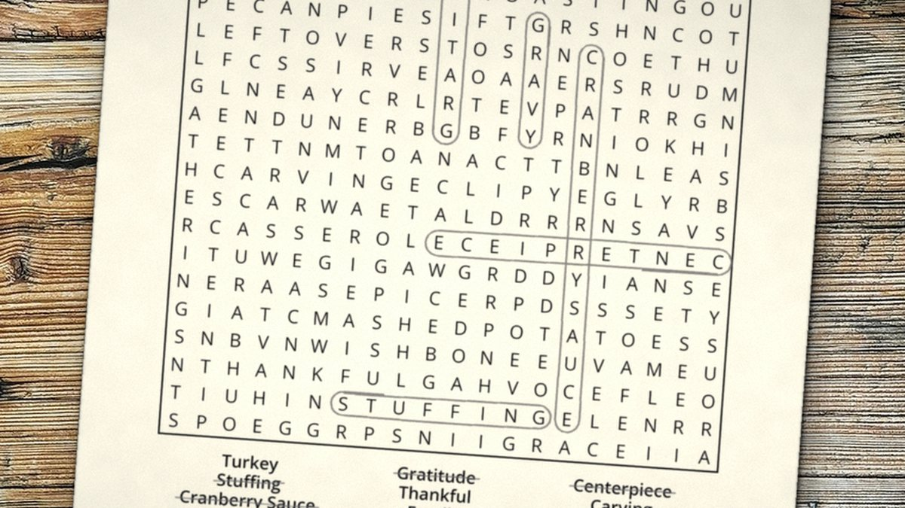

October 12, 2026 · By Pixel Punk Studio
Word searches are one of the easiest puzzles to share: no rules to learn, no math, and you can stop after five minutes or keep going for an hour. For older adults they also tick a lot of boxes at once: a calm moment, a reason to sit together, and something to look forward to. Here are ten ways to make the most of them, at home or in a group.
Before you start: pick the right puzzle
- Large print matters. Look for big letters, a clear grid and plenty of white space. Most of our books use a 20 x 20 grid on full 8.5 x 11 inch pages for that reason.
- A theme helps. Words about seasons, holidays, hobbies or travel are easier to spot, and they get people talking.
- Check the solution is included. Nobody likes being stuck on the last word.
10 word search activity ideas
- The morning coffee puzzle. One puzzle with breakfast is a gentle start to the day and an easy habit to keep.
- Team searching. Two people, one puzzle, two pencil colors. Count who found more words, or just enjoy the company.
- The season of the month. Match the puzzle to the calendar: snowflakes in January, gardens in April, beaches in July, harvest in October. It is a nice way to mark the year, especially for anyone who doesn't get outside as often as they'd like.
- Memory lane. After each puzzle, pick one word and share a story about it. "Hayride" or "sandcastle" can start a wonderful conversation.
- Group activity time. In a senior center or care home, print the same puzzle for everyone and read the words aloud together. The first table to finish chooses next week's theme.
- Grandkids' challenge. Grandparents and grandchildren race on the same puzzle (a kids' puzzle for the little ones, a large print one for grandma or grandpa).
- Holiday table placemats. Print a holiday word search for each place at the Thanksgiving or Christmas table: perfect while the turkey rests.
- Waiting room kit. Keep a folded puzzle and a pencil in a bag for appointments, trips and long car rides.
- Make your own list. Write down 15 words about your family, your hometown or a favorite trip, and let someone else hide them in a grid (or use an online grid maker).
- The monthly book club, puzzle edition. Everyone solves the same puzzle book over a month, then meets to compare favorite themes over tea and cookies.
Tips to keep it relaxing
- Good light and a soft pencil (or a highlighter) make a big difference.
- Clip the page to a clipboard so it doesn't slide on a lap or a tray.
- There is no time limit. Finding half the words today and the rest tomorrow is perfectly fine.
Want to try one now? Every printable below is free, large print and comes with its solution.